Page switching: before and after #58
Every number and image below was produced against two production builds
running side by side on this machine, each against its own throwaway
database. Nothing here is reasoned about; each claim names the capture
behind it, and the raw data sits beside this file in data/.
#58 does what it set out to do mechanically — 0 of 45 rail clicks load
a new document (BEFORE: 45 of 45), the first visible change comes at a
median 48 ms (BEFORE 204 ms), a page switch costs 1–3 tenant
transactions instead of 12–14, and the chosen Property is kept — but
it introduced a language regression (server-rendered copy turns
Turkish after a rail click on /en and /ar),
and on clicks that did not stall
the page's data reaches the screen later than before (median
348 ms vs 134 ms).
Failures, first
-
F1 — FAIL, regression from #58: wrong language after a rail
click.
On
/enand/ar, every page reached through the rail renders its server copy in Turkish (e.g. Finance says “Folyolar — Deniz Otel Kadıköy” on/en); a reload of the same URL renders it correctly (“Folios at Deniz Otel Kadıköy”). The sign-in page reached by a soft redirect is Turkish too. BEFORE is correct in every case. Root cause: pages callgetTranslations()with no locale and onlyapp/[locale]/layout.tsx:61callssetRequestLocale; a client navigation does not re-run that layout, soi18n/request.tsfalls back todefaultLocale(tr). Same finding as the audit lane's F-2. Evidence ↓ -
F2 — FAIL against the goal: data on screen is slower on an
unloaded click.
On clicks that did not stall (≤ 1.5 s): AFTER 25/45, BEFORE 26/45,
AFTER's median is 348 ms (min 340) and BEFORE's is 134 ms (min 72).
The skeleton from
loading.tsxappears at ~48 ms and React then holds any Suspense fallback for at least 300 ms (globalMostRecentFallbackTime + 300 - now(), Next's bundled react-dom line 12097), so AFTER cannot show data before ~340 ms even when the server answers in ~15 ms. What AFTER wins is feedback, not data. Evidence ↓ - F3 — NOT IMPROVED here: stalls. 20/45 AFTER clicks and 19/45 BEFORE clicks took longer than 1.5 s (up to 14.7 s and 14.7 s). Postgres itself logged trivial statements taking 4–16 s in both builds; the Docker VM they run in has 4 vCPUs at load 50–129 with CPU pressure ~85–90 % from unrelated containers. #58 cut the statements the database had to run by 7.7× (665 vs 5103 tenant statements for the same 45 clicks) and the >1 s statements from 77 to 27, but in this environment that did not make stalls rarer. What changes is what a stalled click looks like: AFTER shows a skeleton within ~50 ms, BEFORE shows nothing until the new document arrives. Evidence ↓
- Pre-existing gap (not #58): when the database goes away mid-session, a rail click in both builds replaces the whole workspace — rail included — with Next's generic “This page couldn’t load”; there is no workspace error boundary. Evidence ↓
-
UNVERIFIED: the mobile bottom dock, the Front Office group's
children (arrivals, departures, reservations, rooms), an
Organization missing some Entitlements, roles other than manager and
front desk, and
/tr(where F1 cannot show, since Turkish is the fallback). None was exercised. Details ↓
Environment
| AFTER |
origin/main at 96427b5 (Merge #59) —
includes #58, and also #56, #57 and #59
|
|---|---|
| BEFORE |
498616d (Merge #54) — main with #55 and #54, before #58
|
| Builds |
next build + next start of
apps/operator-workspace in each worktree; AFTER on
http://localhost:3115, BEFORE on
http://localhost:3125
|
| Databases |
two throwaway ranza-postgres (PostgreSQL 17 + pgTAP)
containers, AFTER on port 54395, BEFORE on 54396, each migrated by
its own tree (33 and 29 migrations) and seeded through its own app
with scripts/db-seed-dev.mjs; started with
log_statement=all and later
log_duration=on. The shared 54322 and every hosted
database were not touched.
|
| Account |
deniz@example.test, role manager, assigned to
both Properties (Deniz Otel Kadıköy, Deniz Rezidans Beşiktaş). Role
case: a front_desk account assigned to Kadıköy only.
|
| Audit history |
24 (BEFORE) / 25 (AFTER) staff.invited records, created
by inviting colleagues through each app's own People dialog; AFTER
has one more because a debug run of the invite script created it.
|
| Browser | headless Chromium from Playwright 1.63, in this lane's own process, viewport 1440×1000. No shared browser MCP was used. |
| When | 2026-09-24, timing runs 15:36:20–15:46:30 UTC; cases and re-runs until about 17:15 UTC |
| Machine load |
Mac load average 10–25 during the timing runs (per-run values
below), spiking past 200 later while other lanes captured. The
colima Docker VM (4 vCPU) sat at load 50–129 with CPU pressure
some avg10 85–90 % throughout, mostly from eight
unrelated cvat_worker_* containers.
|
Confound, stated up front. AFTER is today's main, so it also carries #56, #57 and #59. Where a difference comes from those (the audit log's layout and paging, the front-desk role losing the audit log, the second layout read) it is called out; the transaction breakdown below separates #58's reads from #59's.
What was tested
| # | Case | AFTER | BEFORE (control) | Result |
|---|---|---|---|---|
| 1 | Rail click loads a new document? | 0 / 45 | 45 / 45 | PASS |
| 2 | Time to first visible change | median 48 ms | median 204 ms | PASS |
| 3 | Time to data on screen (un-stalled clicks) | median 348 ms | median 134 ms | FAIL |
| 4 | Clicks slower than 1.5 s | 20 / 45 | 19 / 45 | NOT IMPROVED |
| 5 | Loading skeleton shown mid-navigation | yes, 45 / 45 clicks; captured | no skeleton exists | PASS |
| 6 | Tenant transactions: full load / page switch | 3 / 1–3 | 12 / 12–14 | PASS |
| 7 | ?property= kept across rail clicks | kept, 3 of 3 clicks | dropped on every click | PASS |
| 8 | Ended session sent to sign-in on the next click | yes, without a new document | yes, by a full load | PASS |
| 9 | Audit rows do not prefetch | 0 prefetches for 25 row links, 10 hovered | 0 (plain anchors) | PASS |
| 10 | Server copy in the URL's language after a click | Turkish on /en and /ar | correct | FAIL |
| 11 | Signed out → sign-in | redirected | redirected | PASS |
| 12 | Non-default role (front desk) | soft, Property kept | full loads | PASS |
| 13 | Database down mid-navigation | generic error, shell lost | generic error, shell lost | PRE-EXISTING GAP |
| 14 | Mobile dock, Front Office children, partial Entitlements, other roles, /tr | not exercised | not exercised | UNVERIFIED |
1 · Does a rail click load a new document?
Each click was measured in the page itself. An init script gives every
document an id; after the click the harness asks which document it is
talking to, and separately counts document-type requests
the browser made. 3 runs × 15 clicks per build, the runs interleaved
AFTER/BEFORE, cycling Finance → People → Audit log → Analytics → Today.
| Build | clicks | new document | document requests | navigation response |
|---|---|---|---|---|
| AFTER | 45 | 0 | 0 | 45 × RSC fetch |
| BEFORE | 45 | 45 | 45 | 45 × HTML document |
PASS Every AFTER click stayed in the same
document; every BEFORE click replaced it. The full per-click list is in
the appendix and in data/timing-*-run*.json.
2 · Time to the first visible change, and to data on screen
How it was measured. Times start at the click event, taken inside
the page. First visible change: for a soft navigation, two
animation frames after the old content leaves main (the
skeleton or the new page replacing it); for a full load, the new
document's first-contentful-paint. Data on screen:
two animation frames after main holds the new page with no
aria-busy skeleton left in it (full load: the later of that
and first paint). A click slower than 1.5 s is reported as a stall and
never dropped. The screencast filmstrips further down check these
in-page marks against painted pixels.
| Build · run | load at start (1/5/15 min) | first change, median | data, median | data, median of un-stalled | stalls >1.5 s |
|---|---|---|---|---|---|
| AFTER · run 1 | 10.8 / 27.9 / 38.4 | 48 ms | 351 ms | 348 ms | 7 / 15 |
| AFTER · run 2 | 24.9 / 23.7 / 34.4 | 48 ms | 561 ms | 348 ms | 7 / 15 |
| AFTER · run 3 | 20.7 / 22.4 / 31.3 | 48 ms | 431 ms | 347 ms | 6 / 15 |
| BEFORE · run 1 | 12.3 / 22.9 / 35.0 | 152 ms | 154 ms | 136 ms | 5 / 15 |
| BEFORE · run 2 | 24.8 / 24.5 / 33.4 | 204 ms | 205 ms | 120 ms | 7 / 15 |
| BEFORE · run 3 | 13.1 / 19.5 / 29.1 | 908 ms | 911 ms | 138 ms | 7 / 15 |
| AFTER · all 45 | 48 ms | 431 ms | 348 ms (n=25) | 20 / 45 | |
| BEFORE · all 45 | 204 ms | 205 ms | 134 ms (n=26) | 19 / 45 |
| Page | AFTER first change | AFTER data (un-stalled) | BEFORE first change = data (un-stalled) |
|---|---|---|---|
| finance | 48 ms | 348 ms | 134 ms |
| people | 47 ms | 351 ms | 134 ms |
| audit-log | 48 ms | 348 ms | 96 ms |
| analytics | 48 ms | 347 ms | 126 ms |
| today | 48 ms | 348 ms | 205 ms |
PASS First visible change: AFTER 48 ms median, p90 49 ms — flat even through stalls. BEFORE 204 ms median, p90 12456 ms, because a stalled full load shows nothing until the document arrives.
FAIL Data on screen, un-stalled clicks:
AFTER 348 ms, BEFORE 134 ms. AFTER never went below 340 ms, on any page
— Analytics, which reads almost nothing, included. The floor is the same
on every page, including one that reads almost nothing, so it does not
track the server's work; AFTER's navigation response starts arriving at
a median 16 ms (BEFORE's HTML document: 185 ms), though a first byte
alone does not prove the page's data had arrived. What the floor does
match is React: once a Suspense fallback is on screen it is kept for at
least 300 ms. In the react-dom Next 16.3.5 bundles
(next/dist/compiled/react-dom/cjs/react-dom-client.production.js):
12097: ((exitStatus = globalMostRecentFallbackTime + 300 - now()), 13270: 300 > now() - globalMostRecentFallbackTime)
~48 ms to the skeleton + 300 ms held = the ~345 ms seen on every
un-stalled AFTER click. This is a consequence of adding
(workspace)/loading.tsx, which is also what makes the
instant skeleton and the prefetch possible — a trade, not an accident,
but one #58 did not state.
Filmstrips — painted frames from Chrome's own screencast
Chrome's Page.startScreencast emits a timestamped frame
whenever the page repaints. The harness keeps the last frame before the
click and every frame after it whose size changed by more than 2 % (a
visible change, not the skeleton's pulse); every frame's offset and size
is listed in data/cases-*.json. Stalled attempts were
retried until one did not stall, and each attempt is recorded. The
frames shown come from img/frames-*/;
img/*-film-*.jpg are the harness's fixed-mark picks for the
same clicks (last before, first after, +100 ms, +250 ms, first after the
data mark), kept because the JSON names them, and
img/frames-after-film-slow/ holds every saved frame of the
slow click, the skeleton pulsing for eight seconds.
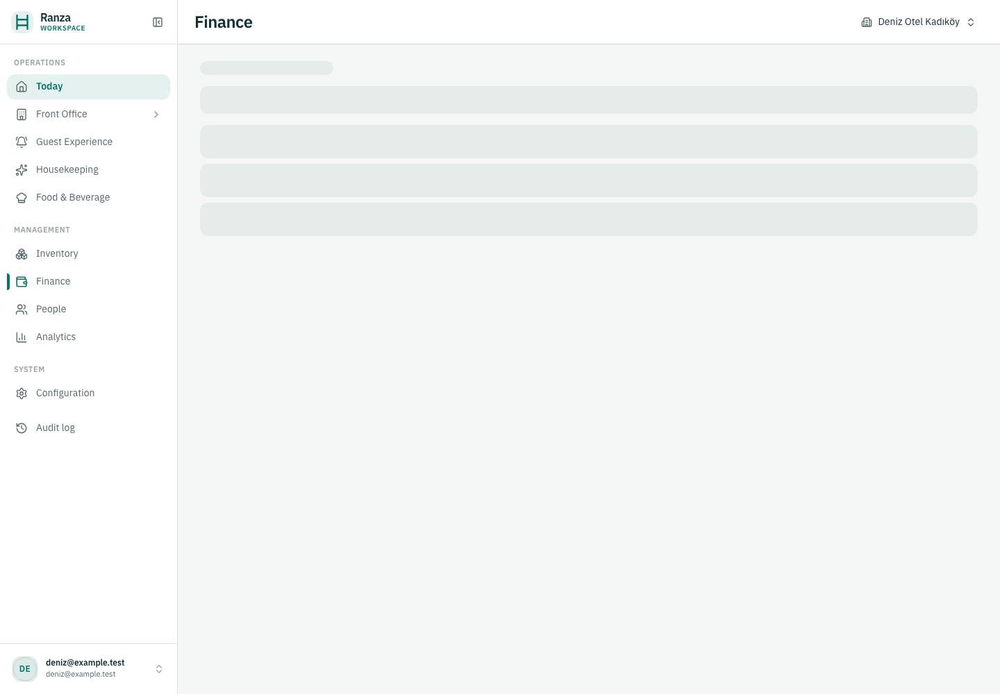
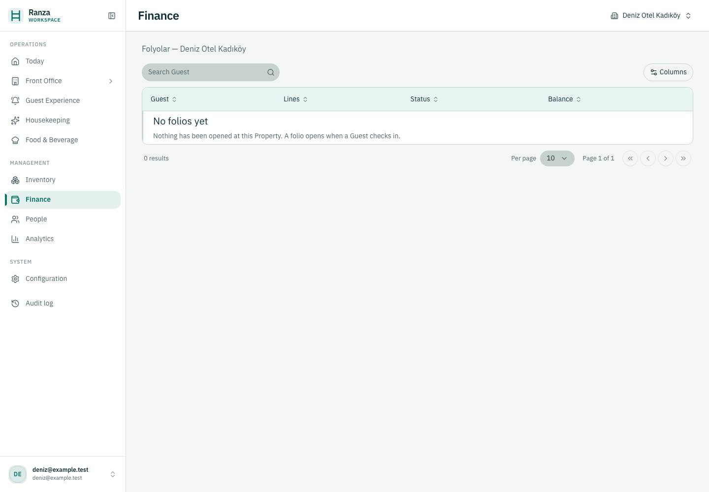

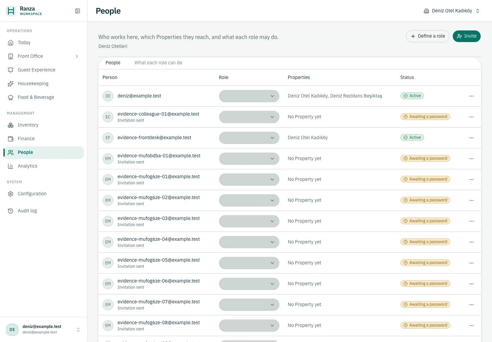

Pixel check of the in-page marks: AFTER's content frame is at +321 ms against an in-page data mark of 328 ms; BEFORE's first frame is at +332 ms against an in-page first paint of 332 ms. The in-page numbers agree with painted frames to within about one frame.
Slow network — 2500 ms added to every request
With Network.emulateNetworkConditions adding 2.5 s of
latency after the rail had prefetched, the same click on both builds.
This is the capture that shows the skeleton unambiguously.
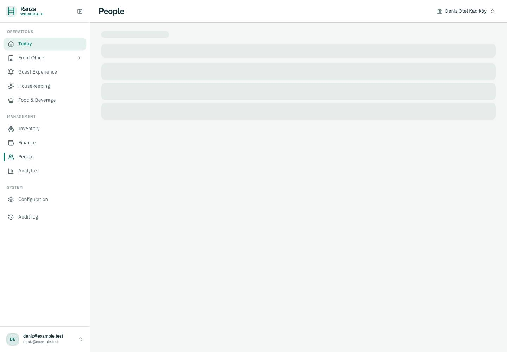
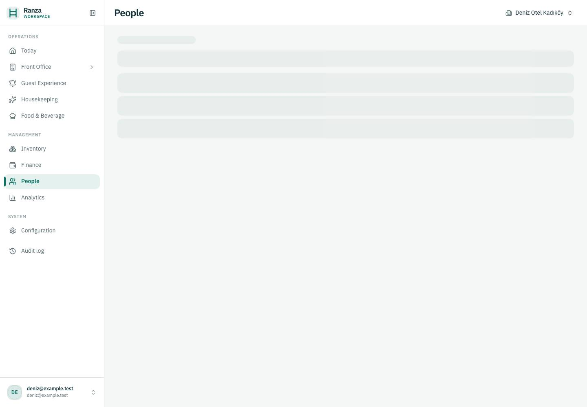
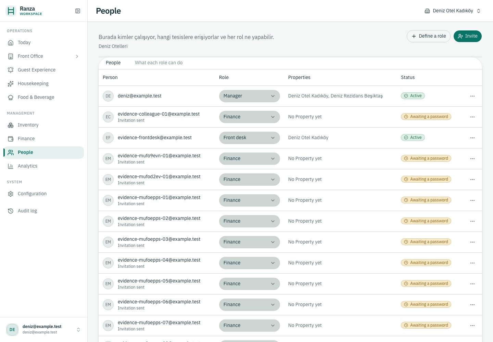
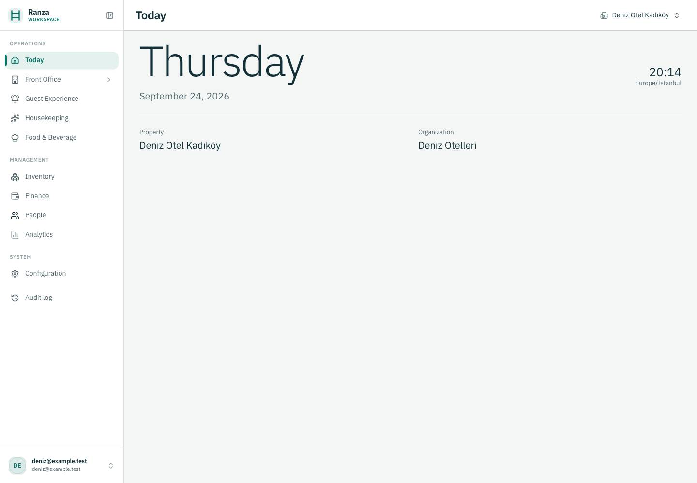

3 · Stalls, and where they come from
NOT IMPROVED AFTER stalled on 20 of 45 clicks (ms: 1814, 1814, 1995, 5431, 6096, 7605, 7813, 8363, 8680, 9545, 9613, 10030, 10144, 10531, 11697, 11825, 13065, 13198, 14548, 14664); BEFORE on 19 of 45 (ms: 2007, 3280, 3376, 4112, 5117, 5670, 6741, 7848, 8477, 8693, 10484, 10827, 11245, 11376, 12457, 12812, 13421, 13881, 14703). One click per build went past 15 s and was re-run once, as the brief asks; both re-runs are marked in the appendix.
With log_duration=on, each container's own log for the
timing window says where the time went:
| Build | tenant statements | auth statements | statements > 1 s | > 1 s, by table or statement | slowest |
|---|---|---|---|---|---|
| AFTER | 665 | 379 | 27 | execute <unnamed>: ×2, auth_identities ×11, auth_user ×4, auth_session ×4, execute <unnamed>: select app.set_request_contex ×3, statement: BEGIN ×3 | 16207 ms ranza_app execute <unnamed>:; 14462 ms ranza_auth auth_identities; 11236 ms ranza_auth auth_user |
| BEFORE | 5103 | 519 | 77 | execute <unnamed>: select app.set_request_contex ×31, execute <unnamed>: ×26, auth_session ×5, auth_identities ×13, ? ×1, statement: COMMIT ×1 | 14895 ms ranza_app execute <unnamed>: select app.set_reques; 14894 ms ranza_app execute <unnamed>: select app.set_reques; 14409 ms ranza_app execute <unnamed>: select app.set_reques |
A single-row lookup on auth_session or a call to
app.set_request_context() does not take 14 s on its own.
Inside the colima VM that hosts both databases,
/proc/loadavg read 50–129 on 4 vCPUs and
/proc/pressure/cpu read
some avg10=85–90 whenever it was sampled;
docker stats showed eight unrelated
cvat_worker_* containers at 37–50 % CPU each. The stalls
are the environment, and they hit both builds alike. What #58 changes is
how much work each click asks of that starved database — 7.7× fewer
tenant statements for the same clicks — and what the user sees while
waiting.
4 · Tenant transactions, counted by Postgres
A tenant transaction is one
select app.set_request_context(...) executed by
ranza_app, which is how
withOrganizationContext() opens every one. The harness
wrote a marker statement (select 'EVMARK …') into each
database between phases, so phases are cut by Postgres's own log order,
with no clocks compared. Three runs per build; the counts were identical
in all three, so one column per build is shown. What each transaction
ran is labelled by the first statement after
set_request_context, so a transaction that opens with a
permission check is labelled by that check even when it goes on to read
the audit log.
| Phase | AFTER | AFTER — what ran | BEFORE | BEFORE — what ran | auth queries A / B |
|---|---|---|---|---|---|
| full-load:today | 3 |
1 × one capability's entitled Properties
(listEntitledProperties) 1 × shell: every destination's capability, batched (listEntitledPropertiesByCapability) 1 × a permission check first: permittedProperties, or the audit read opening with its gate |
12 | 12 × one capability's entitled Properties (listEntitledProperties) | 3 / 3 |
| idle-8s:today | 0 | — | 0 | — | 0 / 0 |
| click:finance | 2 |
1 × one capability's entitled Properties
(listEntitledProperties) 1 × folios read |
13 |
12 × one capability's entitled Properties
(listEntitledProperties) 1 × folios read |
3 / 3 |
| click:people | 3 |
1 × one capability's entitled Properties
(listEntitledProperties) 2 × People screen read (roster or roles) |
14 |
12 × one capability's entitled Properties
(listEntitledProperties) 2 × People screen read (roster or roles) |
3 / 3 |
| click:audit-log | 2 | 2 × a permission check first: permittedProperties, or the audit read opening with its gate | 13 |
12 × one capability's entitled Properties
(listEntitledProperties) 1 × audit log read (gate) |
3 / 3 |
| idle-8s+hover-rows:audit-log | 0 | — | 0 | — | 0 / 0 |
| click:today | 1 | 1 × one capability's entitled Properties (listEntitledProperties) | 12 | 12 × one capability's entitled Properties (listEntitledProperties) | 3 / 3 |
PASS AFTER's full load runs 3: the batched shell read (#58), the audit-permission read (#59) and the page's own read. Every AFTER page switch runs only that page's reads (1–3) and no shell reads, because the layout does not render on a client navigation. BEFORE runs 12 one-capability reads for the shell on every click, plus the page's own. The full load's 19 viewport prefetches (all three runs) added no tenant transaction and no auth query to the phase. Idle and hovering the audit rows ran nothing in either build.
5 · The chosen Property across rail clicks
Start on /en/today?property= the second Property (Deniz
Rezidans Beşiktaş), then click Finance, People and Audit log in the
rail. URLs below are what the browser held after each click.
| Step | URL after the step | Switcher shows | New document |
|---|---|---|---|
| start |
/en/today?property=5ee1dfd5-7e67-48f4-b223-43df8c451f4e
|
Today Deniz Rezidans Beşiktaş | — |
| finance |
/en/finance?property=5ee1dfd5-7e67-48f4-b223-43df8c451f4e
|
Finance Deniz Rezidans Beşiktaş | False |
| people |
/en/people?property=5ee1dfd5-7e67-48f4-b223-43df8c451f4e
|
People Deniz Rezidans Beşiktaş | False |
| audit-log |
/en/audit-log?property=5ee1dfd5-7e67-48f4-b223-43df8c451f4e
|
Audit log Deniz Rezidans Beşiktaş | False |
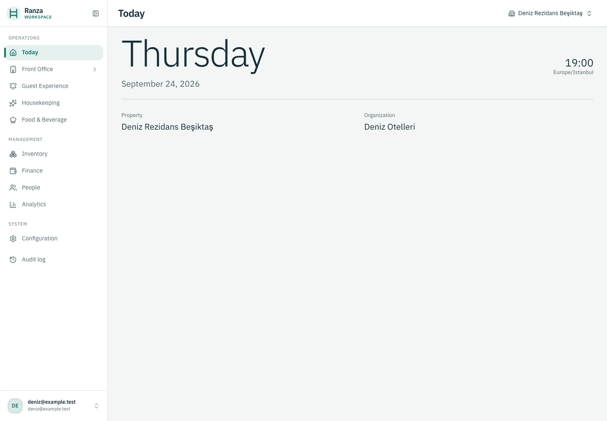
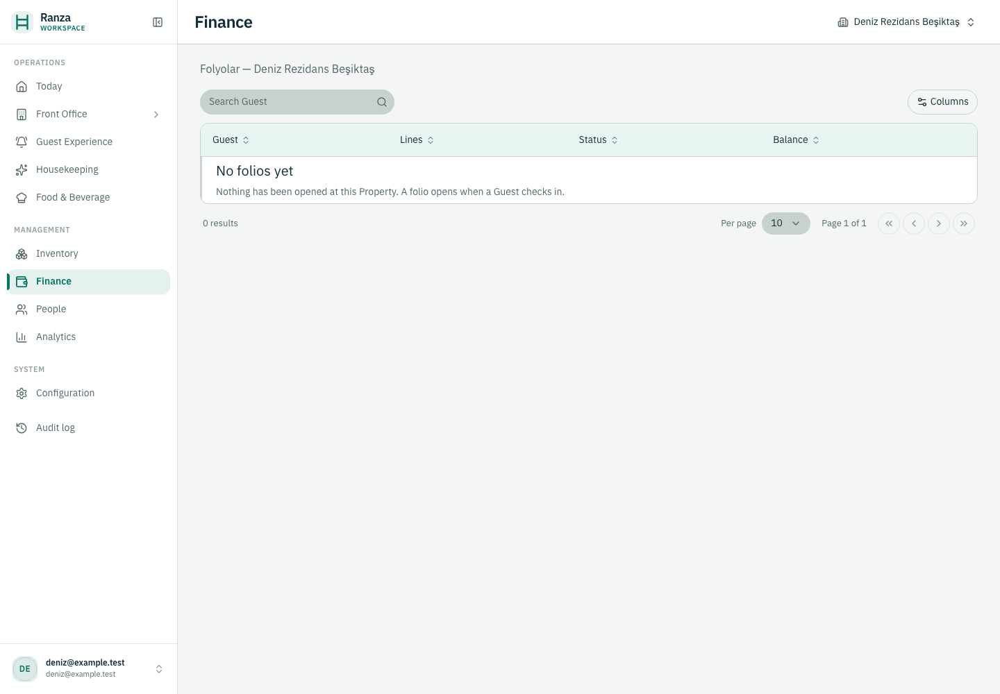
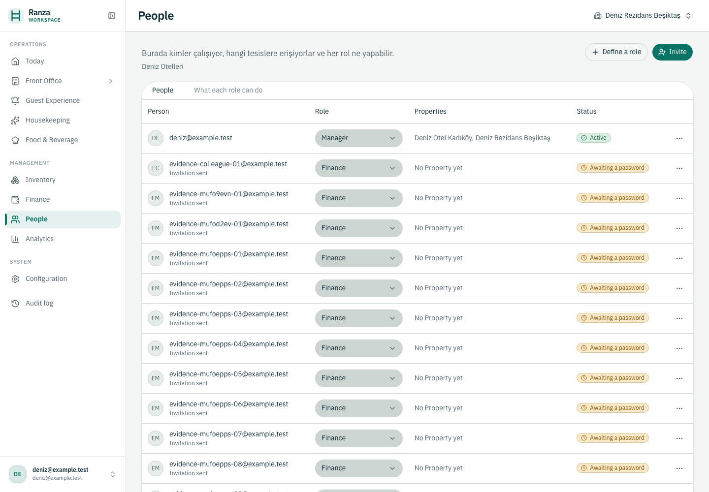
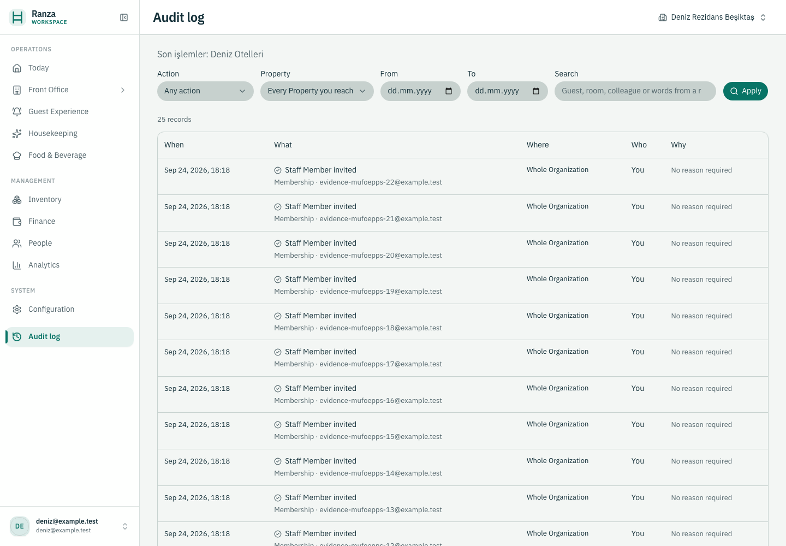
| Step | URL after the step | Switcher shows | New document |
|---|---|---|---|
| start |
/en/today?property=93bfa081-24b1-4495-bfe2-2eedf825b91a
|
Today Deniz Rezidans Beşiktaş | — |
| finance | /en/finance |
Finance Deniz Otel Kadıköy | True |
| people | /en/people |
People Deniz Otel Kadıköy | True |
| audit-log | /en/audit-log |
Audit log Deniz Otel Kadıköy | True |

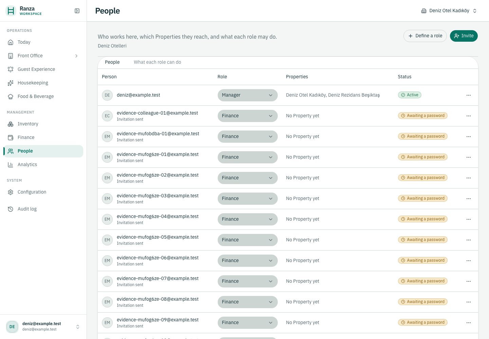

PASS AFTER kept ?property= and
Beşiktaş on all three clicks. BEFORE dropped it on the first click and
fell back to Kadıköy — the silent Property switch #58 fixed. (AFTER's
page headings in these shots are Turkish: that is F1, not this case.)
6 · A session ended while the workspace is open
Signed in, on Today, the harness deleted this browser's session
row (delete from public.auth_session where token = …, which
reported 1 row) and then clicked Finance in the rail.
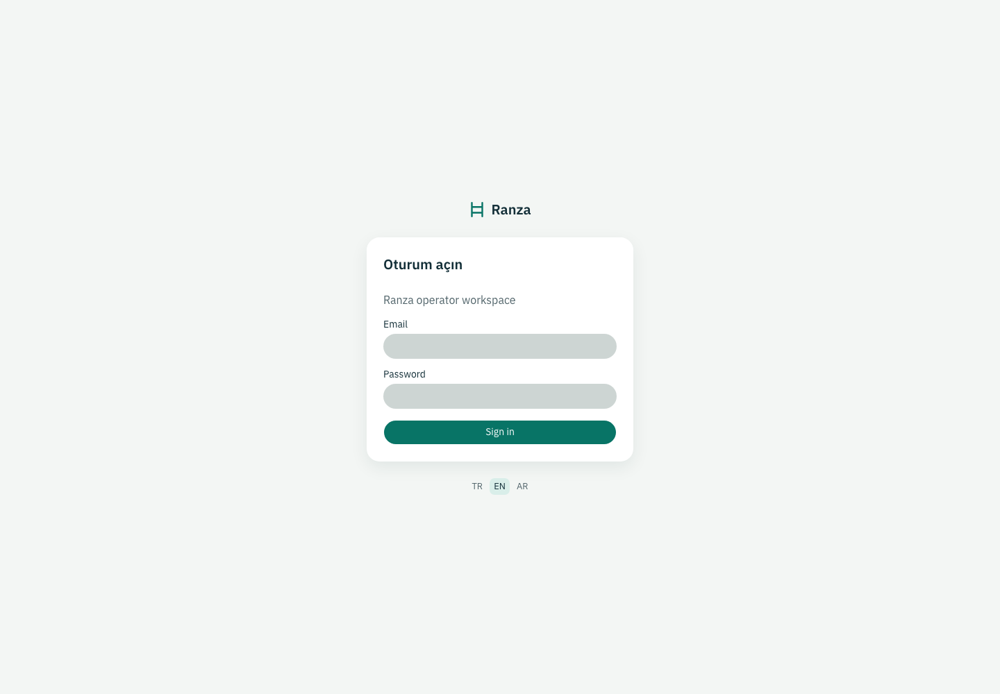
/en/sign-in in the same document (document requests:
0). Proves the page's own requireViewer caught the
ended session. The heading “Oturum açın” is Turkish on an
/en URL — F1 again.
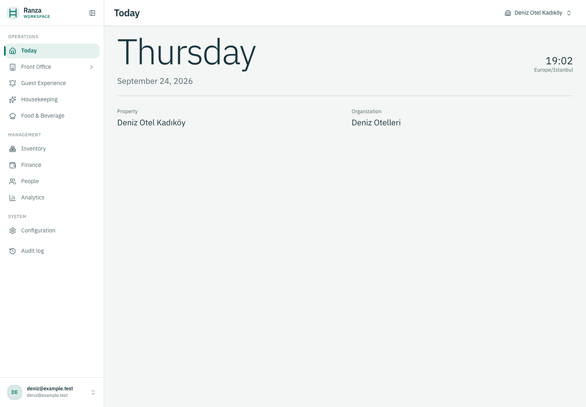

/en/sign-in through full loads (/en/finance,
/en/sign-in); English heading.
PASS Both builds send the ended session to sign-in on the next click.
7 · The audit log's rows do not prefetch
On the audit log, the harness waited 8 s, hovered the first 10 row links
one by one, scrolled down and back, and waited 3 s more, recording every
RSC request. A row link looks like
/en/audit-log?property=43ee392e-763a-4fd5-b8e8-7c0e3c69b98b&record=756418cd-ede5-41fe-ae2a-f814c340c8e6.
| Build | row links on screen | rows hovered | prefetches of a record= URL |
other prefetches |
|---|---|---|---|---|
| AFTER | 25 | 10 | 0 | 0 |
| BEFORE | 10 (paged at 10) | 10 | 0 | 0 |
Positive control — the counter does see prefetches. The same
request listener recorded 19 RSC prefetch requests during every AFTER
full load of Today (all three transaction runs: 19, 19, 19), each
carrying next-router-prefetch or
next-router-segment-prefetch. So a zero on the audit rows
is a real zero.
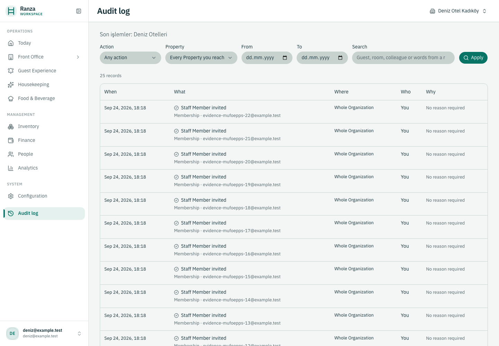
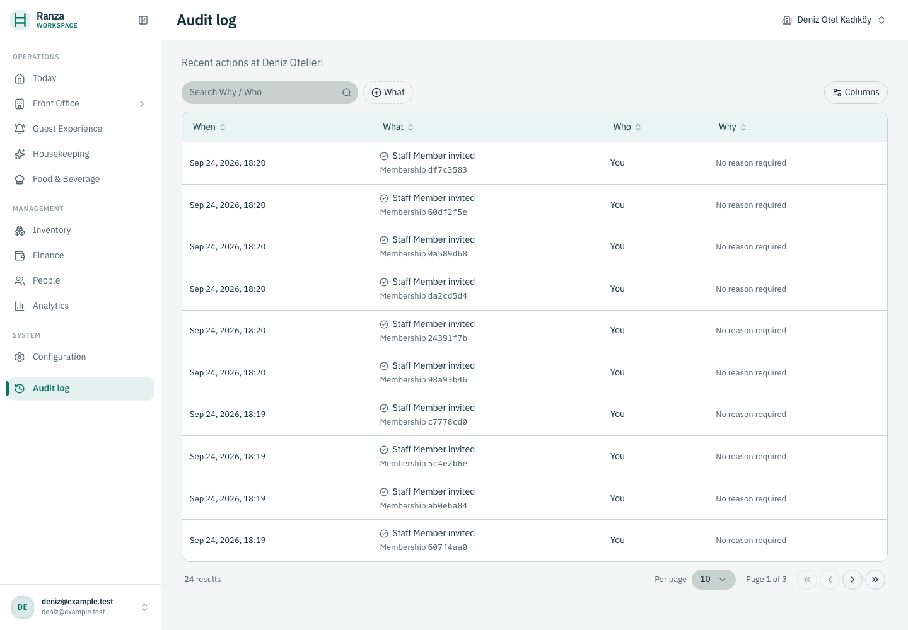
PASS No row prefetches in AFTER. BEFORE's zero proves nothing about Links — its rows were never Links — and is shown only as the baseline.
8 · F1 — which language a page speaks after a rail click
Open /{en,ar}/today, click Finance in the rail, capture;
then reload the same URL and capture again. The first line of the page
is the catalogue key foliosAt: tr “Folyolar —”, en “Folios
at”, ar “الحسابات في” (apps/operator-workspace/src/messages.ts
lines 776, 1328, 1873).
| Build | URL | <html lang> | After the rail click | After a reload of the same URL |
|---|---|---|---|---|
| AFTER | /en/finance |
en | Folyolar — Deniz Otel Kadıköy | Folios at Deniz Otel Kadıköy |
| AFTER | /ar/finance |
ar | Folyolar — Deniz Otel Kadıköy | الحسابات في Deniz Otel Kadıköy |
| BEFORE | /en/finance |
en | Folios at Deniz Otel Kadıköy | Folios at Deniz Otel Kadıköy |
| BEFORE | /ar/finance |
ar | الحسابات في Deniz Otel Kadıköy | الحسابات في Deniz Otel Kadıköy |
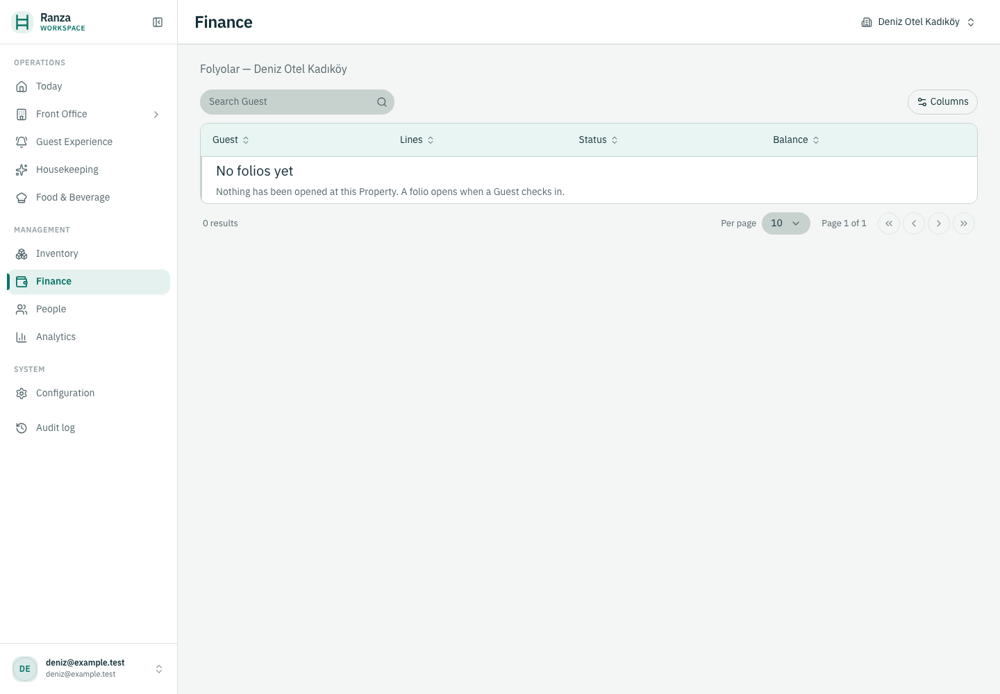
/en/finance after a rail click Heading:
“Folyolar — Deniz Otel Kadıköy”.
Turkish on a page whose shell is English — wrong.
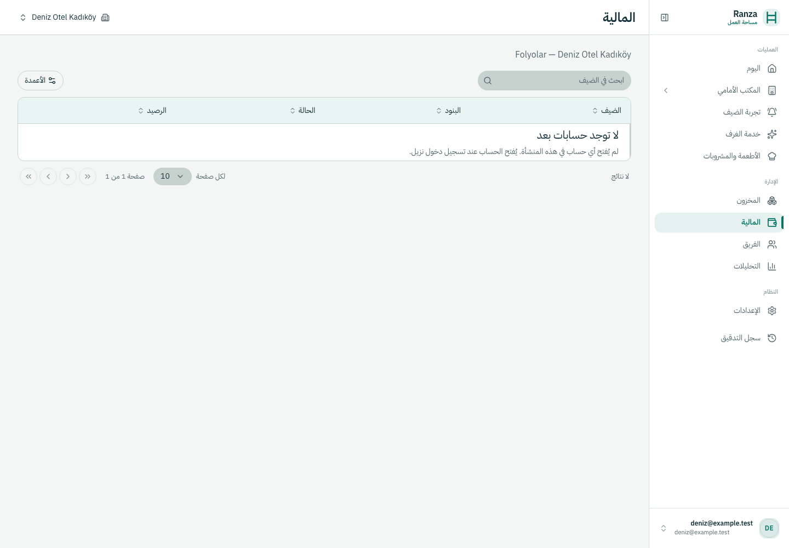
/ar/finance after a rail click Heading:
“Folyolar — Deniz Otel Kadıköy”.
Turkish on a page whose shell is Arabic, right-to-left —
wrong.


/en/finance after a rail click Heading:
“Folios at Deniz Otel Kadıköy”. Correct language.
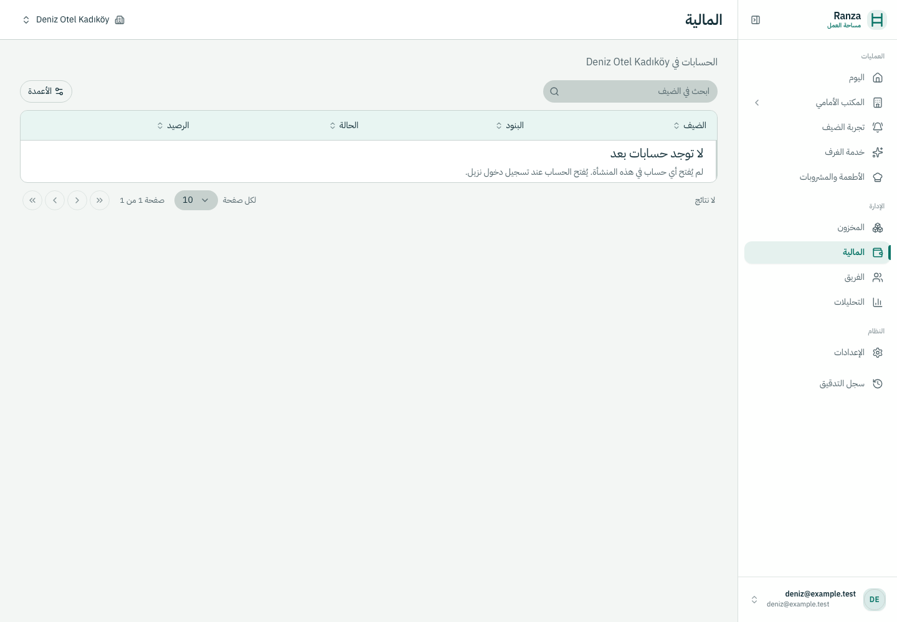
/ar/finance after a rail click Heading:
“الحسابات في Deniz Otel Kadıköy”. Correct language.

FAIL Every page reached through the rail on
AFTER renders server copy in Turkish on /en and
/ar; the client-rendered parts (page bar, table headers)
stay in the right language, which is why the page looks half-translated.
BEFORE, which reloads, is always right. Cause in code:
getTranslations() without a locale in every page,
setRequestLocale only in
app/[locale]/layout.tsx:61, fallback to
defaultLocale in src/i18n/request.ts. The fix
is queued as its own branch
(fix/locale-on-soft-navigation), not made here.
9 · Signed out

/en/finance with no session Redirected
to /en/sign-in, English (a full load, so F1 does not
apply).
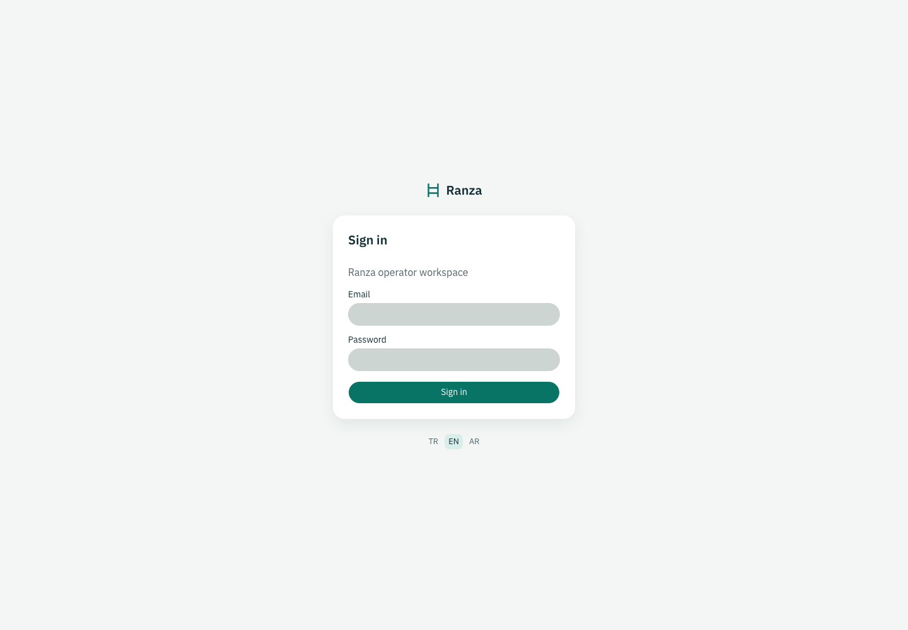
/en/sign-in.
PASS
10 · A non-default role: front desk, one Property
A new account signed up through the app's own route; its first request
created the Ranza user (the empty state below). The harness then granted
a front_desk membership assigned to Kadıköy in SQL, as
db-seed-dev.mjs grants the seed's — there is no
self-service way to accept an invitation yet. Then Finance, People and
Today were clicked in the rail, and the audit log was requested
directly.
| Build | rail destinations | clicks (URL · document requests · same document) | audit log requested directly |
|---|---|---|---|
| AFTER | analytics, configuration, finance, food-and-beverage, guest-experience, housekeeping, inventory, people, today |
finance:
/en/finance?property=43ee392e-763a-4fd5-b8e8-7c0e3c69b98b
· 0 · Truepeople: /en/people?property=43ee392e-763a-4fd5-b8e8-7c0e3c69b98b
· 0 · Truetoday: /en/today?property=43ee392e-763a-4fd5-b8e8-7c0e3c69b98b
· 0 · True
|
This module is not in your Subscription It appears here once your Organization subscribes to it and the Proper… (0 row links) |
| BEFORE | analytics, audit-log, configuration, finance, food-and-beverage, guest-experience, housekeeping, inventory, people, today |
finance: /en/finance · 1 · Falsepeople: /en/people · 1 · Falsetoday: /en/today · 1 · False
|
Recent actions at Deniz Otelleri What Columns Audit log When What Who Why Sep 24, 2026, 18:20 Staff Member inv… (10 row links) |
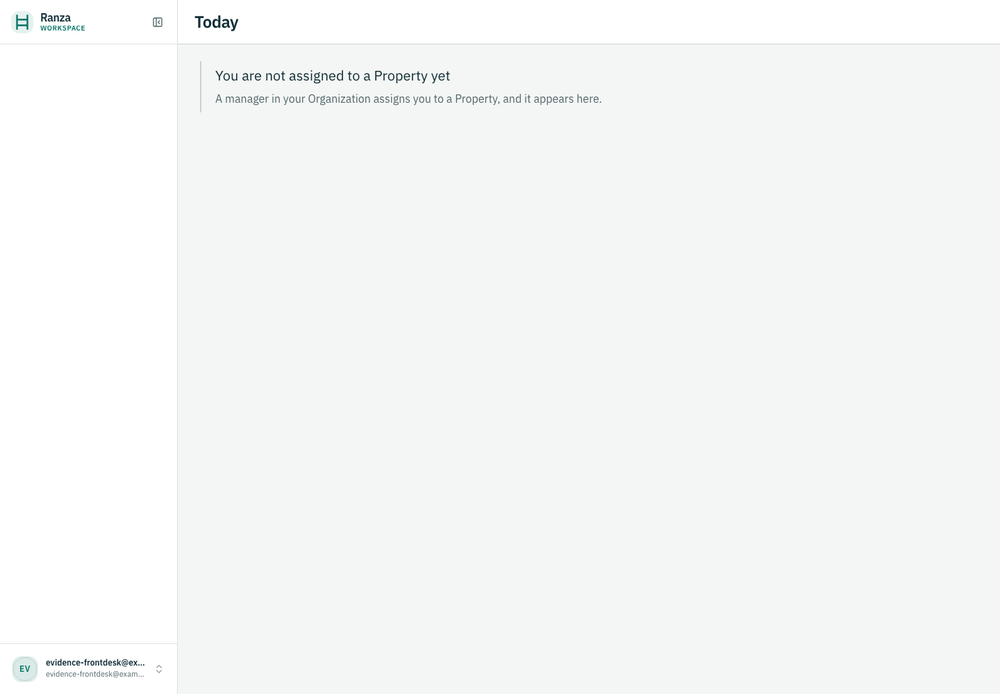
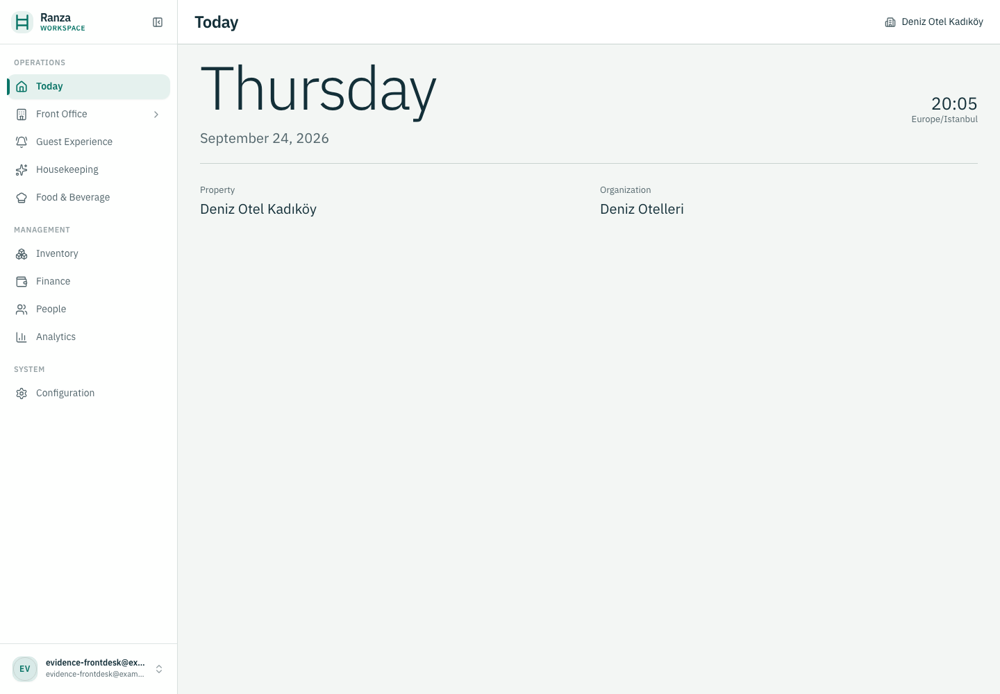
audit.read (#59).
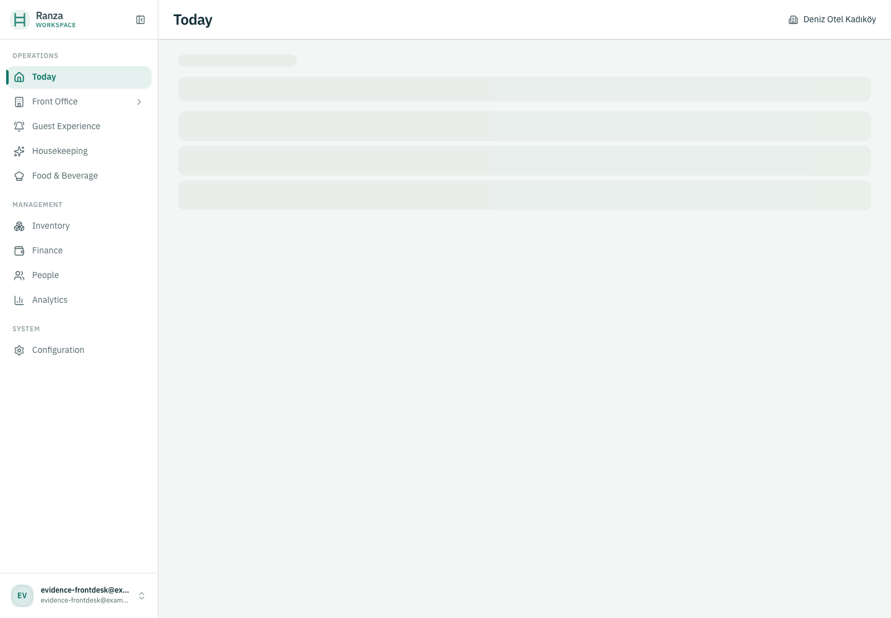
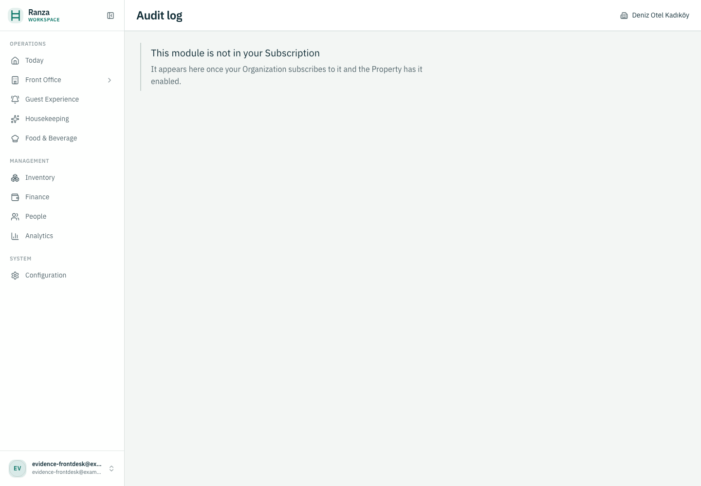
/en/audit-log requested directly The
not-entitled empty state, no records.

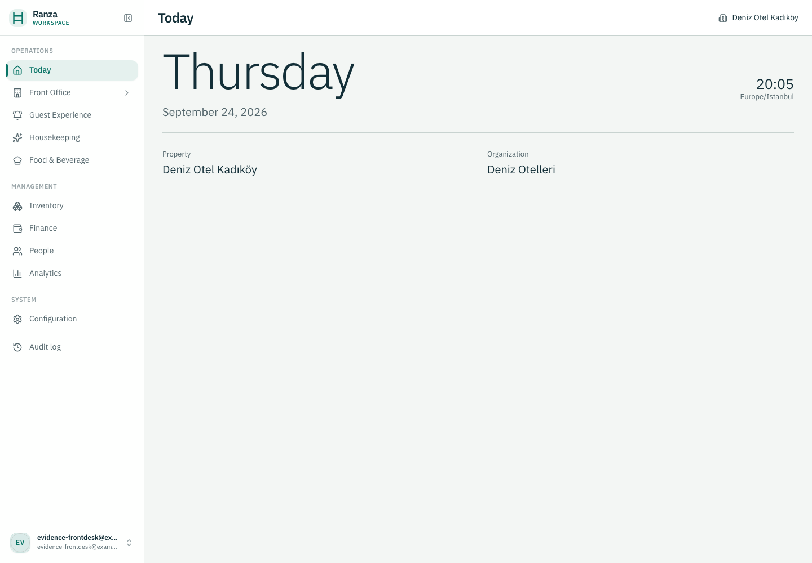
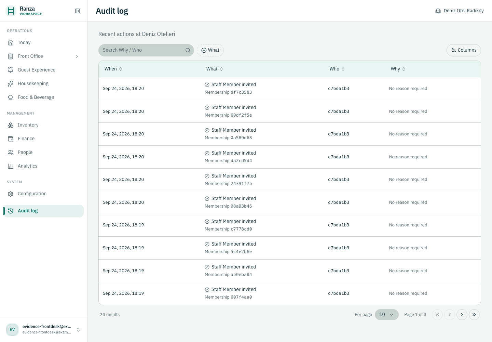
/en/audit-log requested directly
Records are shown — the pre-#59 gate.
PASS For the #58 question the front desk
behaves as the manager does: soft navigation with the Property kept on
AFTER, full loads on BEFORE. The audit-log difference is #59's, not
#58's. The AFTER run was repeated once: the first attempt timed out
waiting 90 s for main during a VM stall.
11 · The database goes away mid-session
On Today, the harness stopped this lane's own database container, clicked Finance, waited 15 s and captured; then started the container, waited until it answered, navigated to People and captured again.
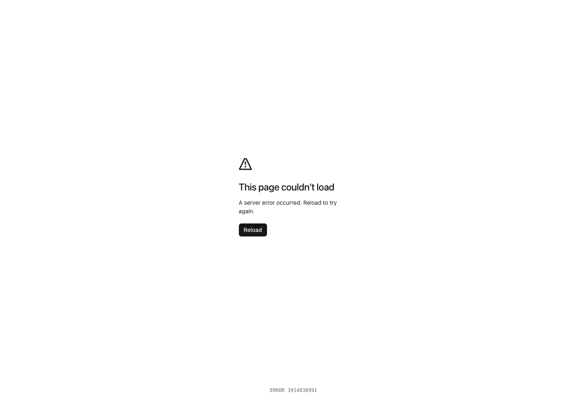
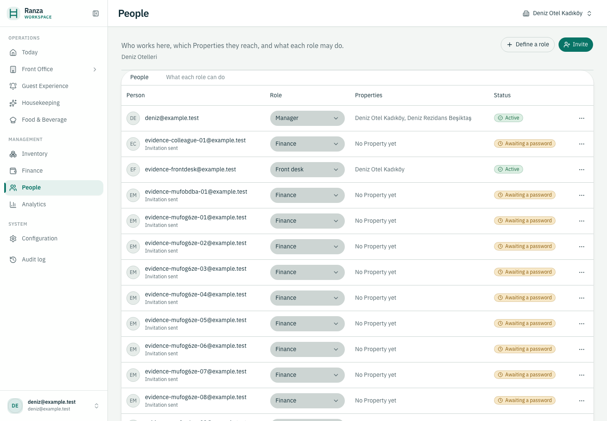
PRE-EXISTING GAP Same behaviour in both
builds, so not a #58 regression — but a workspace-level
error.tsx would keep the rail and let the next click
recover, which matters more now that the shell is meant to persist.
Failures and gaps
| ID | Status | What |
|---|---|---|
| F1 | FAIL |
Server copy turns Turkish after a rail click on /en and
/ar (and on the sign-in page reached by a soft
redirect). Regression from #58. Section 8.
|
| F2 | FAIL |
Data on screen is later on un-stalled clicks: 348 ms vs 134 ms,
bounded below by React's 300 ms fallback hold once
loading.tsx shows. Section 2.
|
| F3 | NOT IMPROVED | Stalls 20/45 vs 19/45 on this machine; caused by the starved Docker VM, not by either build, but #58's 7.7× fewer statements did not reduce them here. Section 3. |
| G1 | PRE-EXISTING GAP | No workspace error boundary: a server error on a rail click loses the whole shell. Section 11. |
| G2 | UNVERIFIED |
Mobile bottom dock (AppBottomNav): only a 1440 px
viewport was used.
|
| G3 | UNVERIFIED | Front Office group children (arrivals, departures, reservations, rooms): the group was never expanded; no click on them was measured. |
| G4 | UNVERIFIED | An Organization missing some Entitlements, a suspended Subscription, and the owner, finance and housekeeping roles. |
| G5 | UNVERIFIED |
/tr: F1 cannot show there because Turkish is the
fallback; not exercised.
|
| G6 | OBSERVATION | AFTER is main with #56/#57/#59 as well as #58; audit-log layout, paging and the front-desk audit gate differ for that reason. |
| G7 | OBSERVATION | In-page timing marks were checked against screencast frames on one un-stalled click per build and agreed to within about one frame; they were not checked on every click. |
Re-runs, all of them
- Timing: one click per build passed 15 s and was re-run once from Today (marked in the appendix).
-
Cases, BEFORE: the filmstrip failed reading
sessionStorageon a transitional document, and the locale case's reload timed out at 90 s; both were re-run (rerunindata/cases-before.json). - Filmstrips: re-captured after the harness was changed to keep only frames that change; the un-stalled attempts needed are listed with each filmstrip (AFTER 3, BEFORE 4).
-
Role case, AFTER: the first attempt timed out waiting 90 s for
main; re-run once. - An earlier version of the timing harness was dry-run against both builds; its runs were discarded before the three recorded runs began, and none of its numbers appear here.
Repro
The harness used is copied beside this file in harness/.
From a machine with Docker, Node 22+ and pnpm:
git worktree add ../ranza-evidence-nav -b evidence/nav-perf origin/main # AFTER (96427b5) git worktree add --detach ../ranza-evidence-nav-before 498616d # BEFORE # per tree: pnpm install --frozen-lockfile && pnpm --filter @ranza/db generate docker run -d --name ranza-evidence-nav-pg -e POSTGRES_USER=ranza -e POSTGRES_PASSWORD=ranza -e POSTGRES_DB=ranza \ -p 54395:5432 ranza-postgres:latest -c log_statement=all -c "log_line_prefix=%m [%p] %u@%d " docker run -d --name ranza-evidence-nav-before-pg -e POSTGRES_USER=ranza -e POSTGRES_PASSWORD=ranza -e POSTGRES_DB=ranza \ -p 54396:5432 ranza-postgres:latest -c log_statement=all -c "log_line_prefix=%m [%p] %u@%d " harness/setup-db.sh ../ranza-evidence-nav 54395 ; harness/setup-db.sh ../ranza-evidence-nav-before 54396 psql -h localhost -p 5439X -U ranza -c "alter system set log_duration = on" -c "select pg_reload_conf()" # each tree's .env pointed at its own port; BETTER_AUTH_URL=http://localhost:3115 / 3125 pnpm turbo run build --filter=@ranza/operator-workspace # in each tree cd apps/operator-workspace && npx next start --port 3115 # AFTER; BEFORE on 3125 # seed through each app: scripts/db-seed-dev.mjs with DATABASE at the tree's port, WORKSPACE_URL=http://localhost:31X5 BASE=http://localhost:3115 N=24 node harness/invite.mjs # audit history, both apps # measurements (LABEL=after|before, BASE, PGPORT, OUT=docs/evidence/nav-perf, RUN=1..3) node harness/harness.mjs timing ; node harness/harness.mjs tx ; node harness/harness.mjs cases python3 harness/tx-parse.py ranza-evidence-nav-pg after data/tx-db-after.json python3 harness/stats.py data node harness/role-case.mjs ; CONTAINER=ranza-evidence-nav-pg node harness/db-down.mjs python3 harness/report.py
Appendix — every timed click
AFTER: all 45 clicks
| run | round | page | href clicked | new doc | doc req | first byte | first change | data | skeleton | note |
|---|---|---|---|---|---|---|---|---|---|---|
| 1 | 1 | finance | /en/finance |
no | 0 | 19 | 46 | 10144 | yes | stall |
| 1 | 1 | people | /en/people |
no | 0 | 15 | 48 | 351 | yes | |
| 1 | 1 | audit-log | /en/audit-log |
no | 0 | 16 | 47 | 10030 | yes | stall |
| 1 | 1 | analytics | /en/analytics |
no | 0 | 15 | 47 | 347 | yes | |
| 1 | 1 | today | /en/today |
no | 0 | 14 | 47 | 8363 | yes | stall |
| 1 | 2 | finance | /en/finance |
no | 0 | 15 | 48 | 348 | yes | |
| 1 | 2 | people | /en/people |
no | 0 | 14 | 47 | 11825 | yes | stall |
| 1 | 2 | audit-log | /en/audit-log |
no | 0 | 17 | 48 | 348 | yes | |
| 1 | 2 | analytics | /en/analytics |
no | 0 | 16 | 48 | 11697 | yes | stall |
| 1 | 2 | today | /en/today |
no | 0 | 17 | 49 | 349 | yes | |
| 1 | 3 | finance | /en/finance |
no | 0 | 16 | 48 | 348 | yes | |
| 1 | 3 | people | /en/people |
no | 0 | 18 | 49 | 1995 | yes | stall |
| 1 | 3 | audit-log | /en/audit-log |
no | 0 | 17 | 51 | 349 | yes | |
| 1 | 3 | analytics | /en/analytics |
no | 0 | 17 | 49 | 13065 | yes | stall |
| 1 | 3 | today | /en/today |
no | 0 | 17 | 46 | 346 | yes | |
| 2 | 1 | finance | /en/finance |
no | 0 | 24 | 45 | 561 | yes | |
| 2 | 1 | people | /en/people |
no | 0 | 15 | 48 | 13198 | yes | stall |
| 2 | 1 | audit-log | /en/audit-log |
no | 0 | 17 | 48 | 347 | yes | |
| 2 | 1 | analytics | /en/analytics |
no | 0 | 14 | 47 | 7813 | yes | stall |
| 2 | 1 | today | /en/today |
no | 0 | 16 | 48 | 348 | yes | |
| 2 | 2 | finance | /en/finance |
no | 0 | 15 | 48 | 1814 | yes | stall |
| 2 | 2 | people | /en/people |
no | 0 | 15 | 47 | 351 | yes | |
| 2 | 2 | audit-log | /en/audit-log |
no | 0 | 16 | 47 | 9613 | yes | stall |
| 2 | 2 | analytics | /en/analytics |
no | 0 | 14 | 41 | 340 | yes | |
| 2 | 2 | today | /en/today |
no | 0 | 18 | 46 | 6096 | yes | stall |
| 2 | 3 | finance | /en/finance |
no | 0 | 19 | 49 | 348 | yes | |
| 2 | 3 | people | /en/people |
no | 0 | 18 | 47 | 14664 | yes | stall |
| 2 | 3 | audit-log | /en/audit-log |
no | 0 | 16 | 48 | 347 | yes | |
| 2 | 3 | analytics | /en/analytics |
no | 0 | 16 | 48 | 1814 | yes | stall |
| 2 | 3 | today | /en/today |
no | 0 | 17 | 48 | 348 | yes | |
| 3 | 1 | finance | /en/finance |
no | 0 | 19 | 45 | 345 | yes | |
| 3 | 1 | people | /en/people |
no | 0 | 14 | 47 | 1210 | yes | re-run; first attempt 15064 ms |
| 3 | 1 | audit-log | /en/audit-log |
no | 0 | 15 | 48 | 348 | yes | |
| 3 | 1 | analytics | /en/analytics |
no | 0 | 16 | 48 | 14548 | yes | stall |
| 3 | 1 | today | /en/today |
no | 0 | 15 | 48 | 347 | yes | |
| 3 | 2 | finance | /en/finance |
no | 0 | 16 | 48 | 8680 | yes | stall |
| 3 | 2 | people | /en/people |
no | 0 | 15 | 47 | 347 | yes | |
| 3 | 2 | audit-log | /en/audit-log |
no | 0 | 15 | 47 | 9545 | yes | stall |
| 3 | 2 | analytics | /en/analytics |
no | 0 | 16 | 48 | 348 | yes | |
| 3 | 2 | today | /en/today |
no | 0 | 17 | 48 | 10531 | yes | stall |
| 3 | 3 | finance | /en/finance |
no | 0 | 16 | 48 | 347 | yes | |
| 3 | 3 | people | /en/people |
no | 0 | 15 | 48 | 7605 | yes | stall |
| 3 | 3 | audit-log | /en/audit-log |
no | 0 | 16 | 49 | 431 | yes | |
| 3 | 3 | analytics | /en/analytics |
no | 0 | 16 | 48 | 5431 | yes | stall |
| 3 | 3 | today | /en/today |
no | 0 | 16 | 48 | 347 | yes |
BEFORE: all 45 clicks
| run | round | page | href clicked | new doc | doc req | first byte | first change | data | skeleton | note |
|---|---|---|---|---|---|---|---|---|---|---|
| 1 | 1 | finance | /en/finance |
yes | 1 | 3345 | 3376 | 3376 | no | stall |
| 1 | 1 | people | /en/people |
yes | 1 | 95 | 132 | 132 | no | |
| 1 | 1 | audit-log | /en/audit-log |
yes | 1 | 11340 | 11376 | 11376 | no | stall |
| 1 | 1 | analytics | /en/analytics |
yes | 1 | 96 | 116 | 120 | no | |
| 1 | 1 | today | /en/today |
yes | 1 | 96 | 116 | 116 | no | |
| 1 | 2 | finance | /en/finance |
yes | 1 | 6715 | 6740 | 6741 | no | stall |
| 1 | 2 | people | /en/people |
yes | 1 | 75 | 108 | 108 | no | |
| 1 | 2 | audit-log | /en/audit-log |
yes | 1 | 127 | 152 | 154 | no | |
| 1 | 2 | analytics | /en/analytics |
yes | 1 | 4091 | 4112 | 4112 | no | stall |
| 1 | 2 | today | /en/today |
yes | 1 | 197 | 216 | 218 | no | |
| 1 | 3 | finance | /en/finance |
yes | 1 | 128 | 144 | 149 | no | |
| 1 | 3 | people | /en/people |
yes | 1 | 155 | 184 | 184 | no | |
| 1 | 3 | audit-log | /en/audit-log |
yes | 1 | 11213 | 11244 | 11245 | no | stall |
| 1 | 3 | analytics | /en/analytics |
yes | 1 | 107 | 128 | 130 | no | |
| 1 | 3 | today | /en/today |
yes | 1 | 119 | 140 | 141 | no | |
| 2 | 1 | finance | /en/finance |
yes | 1 | 8664 | 8692 | 8693 | no | stall |
| 2 | 1 | people | /en/people |
yes | 1 | 164 | 200 | 200 | no | |
| 2 | 1 | audit-log | /en/audit-log |
yes | 1 | 12420 | 12456 | 12457 | no | stall |
| 2 | 1 | analytics | /en/analytics |
yes | 1 | 159 | 180 | 180 | no | |
| 2 | 1 | today | /en/today |
yes | 1 | 10463 | 10484 | 10484 | no | stall |
| 2 | 2 | finance | /en/finance |
yes | 1 | 95 | 116 | 119 | no | |
| 2 | 2 | people | /en/people |
yes | 1 | 8420 | 8456 | 8477 | no | stall |
| 2 | 2 | audit-log | /en/audit-log |
yes | 1 | 71 | 96 | 96 | no | |
| 2 | 2 | analytics | /en/analytics |
yes | 1 | 10809 | 10824 | 10827 | no | stall |
| 2 | 2 | today | /en/today |
yes | 1 | 50 | 68 | 72 | no | |
| 2 | 3 | finance | /en/finance |
yes | 1 | 12786 | 12808 | 12812 | no | stall |
| 2 | 3 | people | /en/people |
yes | 1 | 71 | 100 | 122 | no | |
| 2 | 3 | audit-log | /en/audit-log |
yes | 1 | 14672 | 14700 | 14703 | no | stall |
| 2 | 3 | analytics | /en/analytics |
yes | 1 | 71 | 92 | 93 | no | |
| 2 | 3 | today | /en/today |
yes | 1 | 185 | 204 | 205 | no | |
| 3 | 1 | finance | /en/finance |
yes | 1 | 1976 | 2004 | 2007 | no | stall |
| 3 | 1 | people | /en/people |
yes | 1 | 86 | 120 | 120 | no | |
| 3 | 1 | audit-log | /en/audit-log |
yes | 1 | 69 | 92 | 93 | no | re-run; first attempt did not settle ms |
| 3 | 1 | analytics | /en/analytics |
yes | 1 | 5647 | 5668 | 5670 | no | stall |
| 3 | 1 | today | /en/today |
yes | 1 | 199 | 216 | 216 | no | |
| 3 | 2 | finance | /en/finance |
yes | 1 | 13855 | 13880 | 13881 | no | stall |
| 3 | 2 | people | /en/people |
yes | 1 | 110 | 140 | 140 | no | |
| 3 | 2 | audit-log | /en/audit-log |
yes | 1 | 7814 | 7848 | 7848 | no | stall |
| 3 | 2 | analytics | /en/analytics |
yes | 1 | 172 | 192 | 195 | no | |
| 3 | 2 | today | /en/today |
yes | 1 | 888 | 908 | 911 | no | |
| 3 | 3 | finance | /en/finance |
yes | 1 | 3254 | 3276 | 3280 | no | stall |
| 3 | 3 | people | /en/people |
yes | 1 | 81 | 112 | 137 | no | |
| 3 | 3 | audit-log | /en/audit-log |
yes | 1 | 5084 | 5116 | 5117 | no | stall |
| 3 | 3 | analytics | /en/analytics |
yes | 1 | 99 | 120 | 122 | no | |
| 3 | 3 | today | /en/today |
yes | 1 | 13397 | 13420 | 13421 | no | stall |
Raw data: data/timing-*-run*.json (every click),
data/timing-summary.json,
data/tx-db-*.json and
data/tx-browser-*.json (transactions and requests per
phase), data/cases-*.json, data/role-*.json,
data/dbdown-*.json,
data/pg-slow-statements-campaign.json.